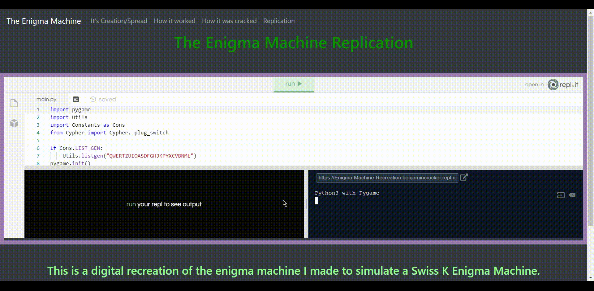

<!DOCTYPE html>
<html class="bg-dark">
  <head>
    <meta charset="utf-8">
    <meta name="viewport" content="width=device-width">
    <title>The Enigma Machine</title>
    <link href="style.css" rel="stylesheet" type="text/css" />
    <link rel="stylesheet" href="https://stackpath.bootstrapcdn.com/bootstrap/4.3.1/css/bootstrap.min.css" integrity="sha384-ggOyR0iXCbMQv3Xipma34MD+dH/1fQ784/j6cY/iJTQUOhcWr7x9JvoRxT2MZw1T" crossorigin="anonymous">
  </head>
  <body>
    <script src="script.js"></script>
  </body>
  <nav class="navbar navbar-expand-lg navbar-dark bg-dark">
  <a class="navbar-brand" href="index.html">The Enigma Machine</a>
  <button class="navbar-toggler" type="button" data-toggle="collapse" data-target="#navbarSupportedContent" aria-controls="navbarSupportedContent" aria-expanded="false" aria-label="Toggle navigation">
    <span class="navbar-toggler-icon"></span>
  </button>

  <div class="collapse navbar-collapse" id="navbarSupportedContent">
    <ul class="navbar-nav mr-auto">
      <li class="nav-item">
        <a class="nav-link" href="Made.html">It's Creation/Spread</a>
      </li>
      <li class="nav-item">
        <a class="nav-link" href="Worked.html">How it worked</a>
      </li>
      <li class="nav-item">
        <a class="nav-link" href="Cracked.html">How it was cracked</a>
      </li>
      <li class="nav-item">
        <a class="nav-link" href="Replication.html">Replication</a>
      </li>
      
  </div>
</nav>
<div class="text-center bg-dark">
<h1 style="color:green">
  The Enigma Machine Replication
  </h1>
<h2>&nbsp;</h2>
<!-- Use iframe to embed recreation  -->
<div style="border: 10px solid #9f82b2">
<iframe height="400px" width="100%" src="https://repl.it/@BenjaminCrocker/Enigma-Machine-Recreation?lite=true?outputonly=1.repl.run" scrolling="no" frameborder="no" allowtransparency="true" allowfullscreen="true" outputonly="yes"
sandbox="allow-forms allow-pointer-lock allow-popups allow-same-origin allow-scripts allow-modals outputonly=1"></iframe>
</div>
<h2>&nbsp;</h2>
<div class="text-center">
<h3 style="color:#90ee90"> This is a digital recreation of the enigma machine I made to simulate a Swiss K Enigma Machine.</h3>
<h2 style="color:green" class="border-top">How to Use:</h2>
<ol style="color:#90ee90; list-style-position: inside">
<li>Get rid of the other windows by dragging them:
<p>&nbsp;</p>

</li>
<li>Set the rotors, reflector, ring settings, and plug-board to the desired state</li>
<li>A plug board must have 1 pair per color, except for white, if there is more than one, then the arrow at the top will disappear</li>
<li>Type your message and whatever lamp glows is the output</li>
</div>

</div>

</html>
